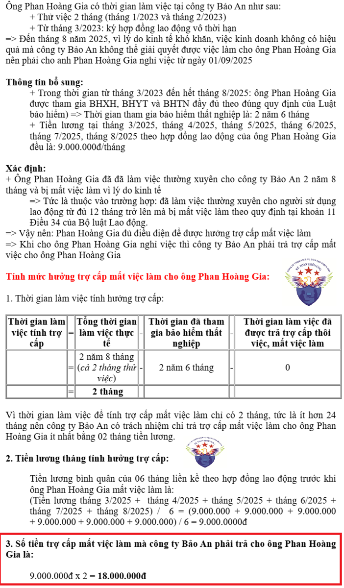

Trợ cấp mất việc làm là khoản tiền do người sử dụng lao động trả cho người lao động đã làm việc thường xuyên cho mình từ đủ 12 tháng trở lên mà bị mất việc làm theo quy định tại khoản 11 Điều 34 của Bộ luật Lao Động số 45/2019/QH14
Về điều kiện được hưởng trợ cấp mất việc làm và cách tính mức hưởng trợ cấp mất việc làm theo quy định tại Bộ luật Lao Động thì các bạn xem chi tiết tại đây: Trợ cấp mất việc làm: điều kiện hưởng, cách tính mức hưởng 2025
Còn trong bài viết này, Công ty đào tạo Kế Toán Diệu Tâm sẽ cùng các bạn đi tìm hiểu xem khi nhận được khoản tiền trợ cấp mất việc làm từ người sử dụng lao động (doanh nghiệp) thì khoản trợ cấp này có bị tính thuế TNCN không?
Theo hướng dẫn tại tiết b.6, điểm b khoản 2 Điều 2 Thông tư 111/2013/TT-BTC thì:
Điều 2. Các khoản thu nhập chịu thuế Trợ cấp thôi việc không bị tính thuế TNCN
2. Thu nhập từ tiền lương, tiền công
.....
b) Các khoản phụ cấp, trợ cấp, trừ các khoản phụ cấp, trợ cấp sau:
.....
b.6) Trợ cấp khó khăn đột xuất, trợ cấp tai nạn lao động, bệnh nghề nghiệp, trợ cấp một lần khi sinh con hoặc nhận nuôi con nuôi, mức hưởng chế độ thai sản, mức hưởng dưỡng sức, phục hồi sức khoẻ sau thai sản, trợ cấp do suy giảm khả năng lao động, trợ cấp hưu trí một lần, tiền tuất hàng tháng, trợ cấp thôi việc, trợ cấp mất việc làm, trợ cấp thất nghiệp và các khoản trợ cấp khác theo quy định của Bộ luật Lao động và Luật Bảo hiểm xã hội.
.....
Các khoản phụ cấp, trợ cấp và mức phụ cấp, trợ cấp không tính vào thu nhập chịu thuế hướng dẫn tại điểm b, khoản 2, Điều này phải được cơ quan Nhà nước có thẩm quyền quy định.
......
Trường hợp khoản phụ cấp, trợ cấp nhận được cao hơn mức phụ cấp, trợ cấp theo hướng dẫn nêu trên thì phần vượt phải tính vào thu nhập chịu thuế.
Kết luận: Đối với khoản tiền trợ cấp mất việc làm này thì:
+ Trường hợp doanh nghiệp trả khoản tiền trợ cấp mất việc làm cho người lao động bị mất việc theo đúng đối tượng và mức quy định của Bộ Luật lao động thì khoản thu nhập này không tính vào thu nhập chịu thuế TNCN từ tiền lương, tiền công của người lao động
+ Trường hợp doanh nghiệp trả khoản tiền trợ cấp mất việc làm cho người lao động bị mất việc cao hơn mức quy định của Bộ Luật lao động thì phần vượt cao hơn đó phải tính vào thu nhập chịu thuế TNCN từ tiền lương, tiền công của người lao động.
Ví dụ:

=> Trong ví dụ trên là người lao động đang nhận được tiền trợ cấp mất việc làm theo đúng đối tượng và mức quy định của Bộ Luật lao động nên khoản thu nhập này không tính vào thu nhập chịu thuế TNCN từ tiền lương, tiền công của người lao động
=> Khi nhận được khoản tiền trợ cấp mất việc làm là 18.000.000đ này, thì ông Trần Quốc Đạt không phải cộng vào để tính thuế TNCN (khoản tiền 18.000.000đ này không bị tính thuế TNCN)
TÌNH HUỐNG GIẢ ĐỊNH:
Công ty An Thịnh chi trả tiền trợ cấp mất việc làm cho ông Trần Quốc Đạt là 20.000.000đ => Tức là đang trả cao hơn mức quy định của Bộ Luật lao động: 2.000.000đ
=> Phần vượt cao hơn là 2.000.000đ này phải tính vào thu nhập chịu thuế TNCN từ tiền lương, tiền công của ông Trần Quốc Đạt.
=> ông Trần Quốc Đạt chỉ không bị tính vào thu nhập chịu thuế đúng với mức quy định của Bộ Luật lao động là 18.000.000đ thôi
=> ông Trần Quốc Đạt chỉ không bị tính vào thu nhập chịu thuế đúng với mức quy định của Bộ Luật lao động là 18.000.000đ thôi
Công ty đào tạo Kế Toán Diệu Tâm mời các bạn tham khảo thêm bài viết: